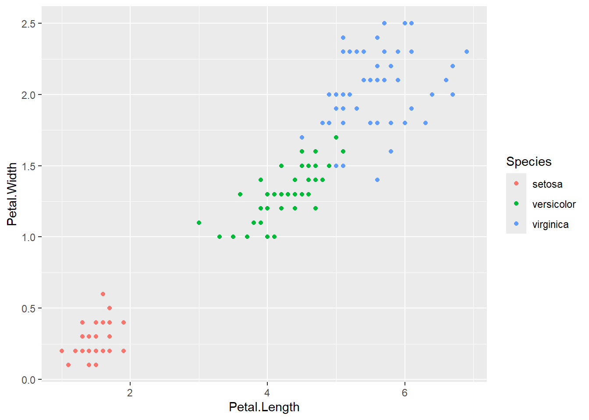
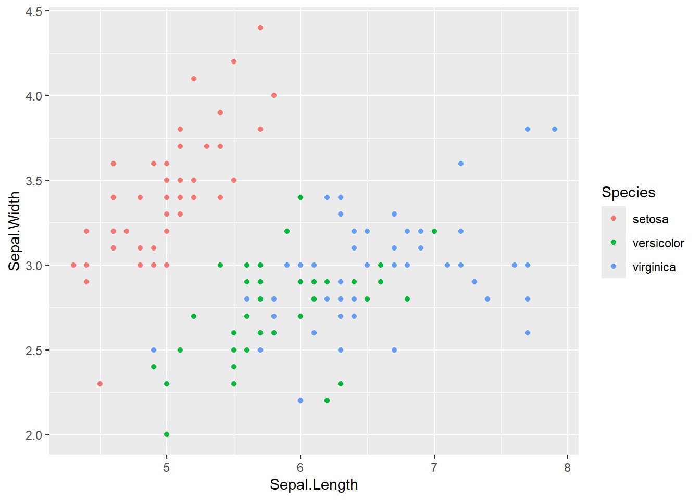

# Paste your code in here!
library(tidyverse)ARA 669 - Assignment 1
Assignment
This first assignment is designed to ease you into the course, and to introduce GitHub and Quarto to those of you not familiar with the programs. It’s also an opportunity for me to gauge a little more formally where everyone is in terms of coding styles and experiences.
Please submit this assignment via GitHub by Sept. 3 at 5 pm.
Getting started
Use the code chunk below to load the tidyverse package [0.5 pt].
Data exploration
Several well-behaved datasets are preloaded into R and are frequently used to demonstrate statistical concepts. Use the function data() to retrieve a list available datasets and pick one to explore for this assignment.
# Paste your code in here!
data()
data("iris")
head(iris) Sepal.Length Sepal.Width Petal.Length Petal.Width Species
1 5.1 3.5 1.4 0.2 setosa
2 4.9 3.0 1.4 0.2 setosa
3 4.7 3.2 1.3 0.2 setosa
4 4.6 3.1 1.5 0.2 setosa
5 5.0 3.6 1.4 0.2 setosa
6 5.4 3.9 1.7 0.4 setosaglimpse(iris)Rows: 150
Columns: 5
$ Sepal.Length <dbl> 5.1, 4.9, 4.7, 4.6, 5.0, 5.4, 4.6, 5.0, 4.4, 4.9, 5.4, 4.…
$ Sepal.Width <dbl> 3.5, 3.0, 3.2, 3.1, 3.6, 3.9, 3.4, 3.4, 2.9, 3.1, 3.7, 3.…
$ Petal.Length <dbl> 1.4, 1.4, 1.3, 1.5, 1.4, 1.7, 1.4, 1.5, 1.4, 1.5, 1.5, 1.…
$ Petal.Width <dbl> 0.2, 0.2, 0.2, 0.2, 0.2, 0.4, 0.3, 0.2, 0.2, 0.1, 0.2, 0.…
$ Species <fct> setosa, setosa, setosa, setosa, setosa, setosa, setosa, s…str(iris)'data.frame': 150 obs. of 5 variables:
$ Sepal.Length: num 5.1 4.9 4.7 4.6 5 5.4 4.6 5 4.4 4.9 ...
$ Sepal.Width : num 3.5 3 3.2 3.1 3.6 3.9 3.4 3.4 2.9 3.1 ...
$ Petal.Length: num 1.4 1.4 1.3 1.5 1.4 1.7 1.4 1.5 1.4 1.5 ...
$ Petal.Width : num 0.2 0.2 0.2 0.2 0.2 0.4 0.3 0.2 0.2 0.1 ...
$ Species : Factor w/ 3 levels "setosa","versicolor",..: 1 1 1 1 1 1 1 1 1 1 ...summary(iris) Sepal.Length Sepal.Width Petal.Length Petal.Width
Min. :4.300 Min. :2.000 Min. :1.000 Min. :0.100
1st Qu.:5.100 1st Qu.:2.800 1st Qu.:1.600 1st Qu.:0.300
Median :5.800 Median :3.000 Median :4.350 Median :1.300
Mean :5.843 Mean :3.057 Mean :3.758 Mean :1.199
3rd Qu.:6.400 3rd Qu.:3.300 3rd Qu.:5.100 3rd Qu.:1.800
Max. :7.900 Max. :4.400 Max. :6.900 Max. :2.500
Species
setosa :50
versicolor:50
virginica :50
colnames(iris)[1] "Sepal.Length" "Sepal.Width" "Petal.Length" "Petal.Width" "Species" attach(iris)Describe the context of the dataset and the structure of the data themselves [1 pt].
The iris dataset contains 150 observations of flower measurements of 3 species: Setosa,Versicolor and Virginica. The measures are sepal length, width and petal length and width. The iris dataset contains 4 variables which are the column names are Sepal.Length, Sepal.Width Petal.Length Petal.Width.
Plotting
Explore the data visually using ggplot2 [1 pt].
# Paste your code in here!
ggplot(iris,aes(Petal.Length, Petal.Width, color=Species))+
geom_point()
ggplot(iris,aes(Sepal.Length, Sepal.Width, color=Species))+
geom_point()
Describe your approach. What choices did you make in deciding which variables to use, plot types, etc., and why? [1 pt].
For this visualization, I created 2 scatter plots to explore how the Petal.Length and Petal width and between Sepal.length and Petal.Width are are related. Both of these plots are based on the numerical measurement to explore relationship visually for each flower category. The different colors shows different species relationship.
Read & reflect
Read the perspectives article “Should we still teach or learn coding? A postgraduate student perspective on the use of large language models for coding in ecology & evolution” (Campbell et al. 2024). What part(s) of this article resonated with you, and why [1.5 pts]?
The claim that resonated with me was the authors augment that LLMs should be supplementary rather than substitute coding education. While I used copilot for Rstudio, Quarto and GitHup setups to run smoothly, I still need to understand fundamental concepts and underlying concepts to effectively evaluate LLMs suggestions and model outputs.This support the authors claims that coding education is still necessary and LLMs should be supplementary to the foundational knowledge skills.
AI statement
Describe your use of AI in this assignment, including:
- What tool or service did you use?
This particular assignment I used copilot
- What was the specific purpose or use?
This Sunday, I used Copilot to complete the setup my GitHup and Studio cloning and. I also used it this to debug my coding errors and editing my explanations
- How did this use enhance your understanding of the topic/code?
It did help me complete my GitHup cloning in Rstudio and step my set un the Quarto code explanations . I found as immediate tool always to use in a state of error or debugging codes.